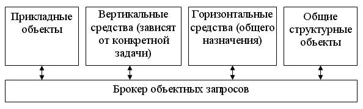
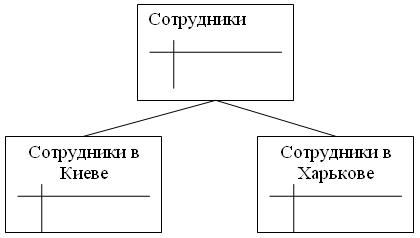
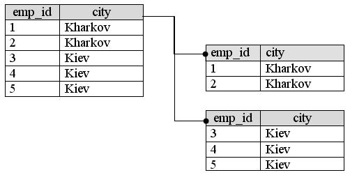
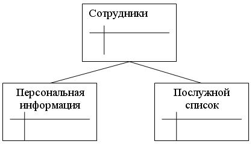
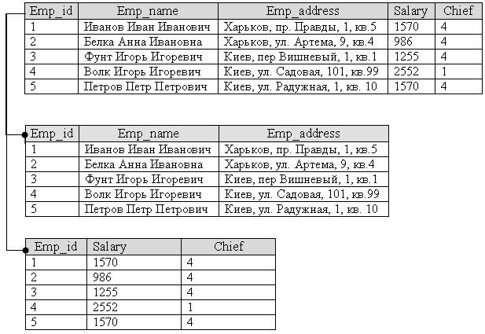
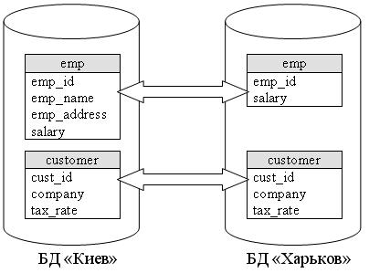
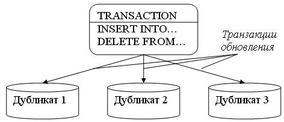
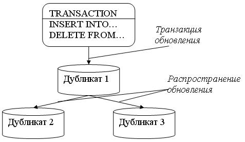

Распределение и тиражирование данных
Одним из основных требований к распределенной базе данных остается требование наличия развитой методологии распределения и размещения данных, включая разбиение.
Технология COM
COM (Component Object Model) - это объектная модель компонентов. Данная технология является базовой для технологий ActiveX и OLE. Технологии OLE и ActiveX - всего лишь надстройки над данной технологией. В качестве примера можно привести объект TObject, как базовый объект VCL Delphi. Точно так же технология СОМ является базовой по отношению к OLE и ActiveX.
Технология СОМ применяется при описании API и двоичного стандарта для связи объектов различных языков и сред программирования. СОМ предоставляет модель взаимодействия между компонентами и приложениями.
Технология СОМ работает с так называемыми СОМ-объектами. СОМ-объекты похожи на обычные объекты визуальной библиотеки компонентов Delphi. В отличие от объектов VCL Delphi, СОМ-объекты содержат свойства, методы и интерфейсы.
Обычный СОМ-объект включает в себя один или несколько интерфейсов. Каждый из этих интерфейсов имеет собственный указатель.
Технология СОМ имеет два явных преимущества:
- создание СОМ-объектов не зависит от языка программирования. Таким образом, СОМ-объекты могут быть написаны на различных языках;
- СОМ-объекты могут быть использованы в любой среде программирования под Windows. В число этих сред входят Delphi, Visual C++, C++Builder, Visual Basic, и многие другие.
Хотя технология СОМ обладает явными плюсами, она имеет также и минусы, среди которых зависимость от платформы. То есть, данная технология применима только в операционной системе Windows и на платформе Intel.
Все СОМ-объекты обычно содержатся в файлах с расширением DLL или OCX. Один такой файл может содержать как одиночный СОМ-объект, так и несколько СОМ-объектов.
Ключевым аспектом технологии СОМ является возможность предоставления связи и взаимодействия между компонентами и приложениями, а также реализация клиент-серверных взаимодействий при помощи интерфейсов.
Технология СОМ реализуется с помощью СОМ-библиотек (в число которых входят такие файлы операционной системы, как OLE32.DLL и OLE-Aut32.DLL). СОМ-библиотеки содержат набор стандартных интерфейсов, которые обеспечивают функциональность СОМ-объекта, а также небольшой набор функций API, отвечающих за создание и управление СОМ-объектов.
В Delphi реализация и поддержка технологии СОМ называется каркасом Delphi ActiveX (Delphi ActiveX framework, DAX). Реализация DAX описана в модуле Axctris.
СОМ-объект
СОМ-объект представляет собой двоичный код, который выполняет какую-либо функцию и имеет один или более интерфейс.
СОМ-объект содержит методы, которые позволяют приложению пользоваться СОМ-объектом. Эти методы доступны благодаря СОМ-интерфейсам. Клиенту достаточно знать несколько базовых интерфейсов СОМ-объекта, чтобы получить полную информацию о составе свойств и методов объекта. СОМ-объект может содержать один или несколько интерфейсов. Для программиста СОМ-объект работает так же, как и класс в Object Pascal.
СОМ-интерфейсы
СОМ-интерфейс применяется для объединения методов СОМ-объекта. Интерфейс позволяет клиенту правильно обратиться к СОМ-объекту, а объекту - правильно ответить клиенту. Названия СОМ-интерфейсов начинаются с буквы I. Клиент может не знать, какие интерфейсы имеются у СОМ-объекта. Для того чтобы получить их список, клиент использует базовый интерфейс lunknown, который есть у каждого СОМ-объекта.
Пользователь СОМ-объекта
Пользователем СОМ-объекта называется приложение или часть приложения, которое использует СОМ-объект и его интерфейсы в своих собственных целях. Как правило, СОМ-объект находится в другом приложении.
СОМ-классы
СОМ со-классы (coclass) - это классы, которые содержат один или более СОМ-интерфейс. Вы можете не обращаться к СОМ-интерфейсу непосредственно, а получать доступ к СОМ-интерфейсу через со-класс. Со-классы идентифицируются при помощи идентификаторов класса (CLSID).
Библиотеки типов
СОМ-объекты часто используют библиотеки типов. Библиотека типов - это специальный файл, который содержит информацию о СОМ-объекте. Данная информация содержит список свойств, методов, интерфейсов, структур и других элементов, которые содержатся в СОМ-объекте. Библиотека типов содержит также информацию о типах данных каждого свойства и Типах данных, возвращаемых методами СОМ-объекта.
Файлы библиотеки типов имеют расширение TLB.
Технология DCOM
Технология DCOM (Distributed COM) - это распределенная СОМ-технология. Она применяется для предоставления средств доступа к СОМ-объектам, расположенным на других компьютерах в сети (в том числе и сети Internet).
Операционные системы Windows NT 4 и Windows 98 имеют встроенную поддержку DCOM.
Счетчики ссылок
Каждый СОМ-объект имеет счетчик ссылок. Данный счетчик содержит число процессов, которые в текущий момент времени используют СОМ-объект. Под процессом здесь подразумевается любое приложение или DLL, которые используют СОМ-объект, т. е. пользователи СОМ-объекта. Счетчик ссылок на СОМ-объект нужен для того, чтобы высвобождать процессорное время и оперативную память, занимаемую СОМ-объектом, в том случае, когда он не используется.
После создания и обращения к СОМ-объекту счетчик ссылок увеличивается на единицу. Всякий раз, когда новое приложение подключается к СОМ-объекту - счетчик увеличивается. Когда процесс отключается от СОМ-объекта - счетчик уменьшается. При достижении счетчиком нуля память, занимаемая СОМ-объектом, высвобождается.
OLE-объекты
Часть данных, использующаяся совместно несколькими приложениями, называется OLE-объектом. Те приложения, которые могут содержать в себе OLE-объекты, называются OLE-контейнерами (OLE container). Приложения, имеющие возможность содержать свои данные в OLE-контейнерах, называются OLE-серверами (OLE server).
Составные документы
Документ, включающий в себя один или несколько OLE-объектов, называется составным документом. Приложение, которое может содержаться внутри документа, называется ActiveX-документом (ActiveX document).
Остальные термины, присущие технологии СОМ, мы рассмотрим в следующих разделах данной книги.
Состав СОМ-приложения
При создании СОМ-приложения необходимо обеспечить следующее:
- СОМ-интерфейс;
- СОМ-сервер;
- СОМ-клиент.
Рассмотрим эти три составляющие СОМ-приложения более подробно.
СОМ-интерфейс
Клиенты СОМ связываются с объектами при помощи СОМ-интерфейсов. Интерфейсы -- это группы логически или семантически связанных процедур, которые обеспечивают связь между поставщиком услуги (сервером) и его клиентом. На рис. 3.1 схематично изображен стандартный СОМ-интерфейс.
Ключевыми аспектами СОМ-интерфейсов являются следующие:
- Однажды определенные, интерфейсы не могут быть изменены. Таким образом, вы можете возложить на один интерфейс определенный набор функций. Дополнительную функциональность можно реализовать с помощью дополнительных интерфейсов.
-По взаимному соглашению, все имена интерфейсов начинаются с буквы I, например IPersist, IMalloc.
-Каждый интерфейс гарантированно имеет свой уникальный идентификатор, который называется глобальный уникальный идентификатор (Globally Unique Identifier, GUID). Уникальные идентификаторы интерфейсов называют идентификаторами интерфейсов (Interface Identifiers, IIDs). Данные идентификаторы обеспечивают устранение конфликтов имен различных версий приложения или разных приложений.
- Интерфейсы не зависят от языка программирования. Вы можете воспользоваться любым языком программирования для реализации СОМ-интерфейса. Язык программирования должен поддерживать структуру указателей, а также иметь возможность вызова функции при помощи указателя явно или неявно.
- Интерфейсы не являются самостоятельными объектами, они лишь обеспечивают доступ к объектам. Таким образом, клиенты не могут напрямую обращаться к данным, доступ осуществляется при помощи указателей интерфейсов.
- Все интерфейсы всегда являются потомками базового интерфейса Iunknown.
Архитектура CORBA
CORBA (Common Object Request Broker Architecture) - обобщенная архитектура брокера объектных запросов, разработана Группой управления объектами (Object Management Group, OMG).
Строго говоря, если судить по ее названию, CORBA представляет собой не столько распределенную систему, сколько ее спецификацию
CORBA определяет механизм, обеспечивающий взаимодействие приложений в распределенной системе.
Главными компонентами стандарта CORBA являются:
- объектный брокер запросов (Object Request Broker);
- язык определения интерфейсов (Interface Definition Language).
В спецификацию CORBA включено также несколько дополнительных, но очень важных сервисов:
- сервис динамического формирования запросов (DII);
- сервис репозитория интерфейсов (IR);
- сервис динамической обработки запросов (DSI);
- сервис, обеспечивающий взаимодействие различных брокеров запросов (GIOP).
Концептуально спецификация CORBA относится к двум верхним уровням семиуровневой модели взаимодействия открытых систем. Характерные особенности проведения разработок в технологии CORBA заключаются в следующем:
- Язык описания интерфейсов OMG IDL позволяет определить интерфейс, независимый от языка реализации.
- Высокий уровень абстракции CORBA в семиуровневой модели OSI избавляет программиста от работы с низкоуровневыми сетевыми протоколами.
- Программисту не требуется информация о месте сервера в сетевой ИС и способе его активации.
- Разработка клиентской программы не зависит от серверной операционной системы и аппаратной платформы.
Объектная модель CORBA
Объектная модель CORBA определяет взаимодействие между клиентами и серверами.
Клиенты - это приложения, которые запрашивают сервисы, предоставляемые серверами.
Объекты-серверы содержат набор сервисов, разделяемых между многими клиентами.
Операция указывает запрашиваемый сервис.
Интерфейсы объектов описывают множество операций, которые могут быть вызваны клиентами определенного объекта.
Реализации объектов - это приложения, исполняющие сервисы, запрашиваемые клиентами.
Глобальная архитектура CORBA приведена на рис. 4.

Рисунок 4 - Архитектура CORBA
Объектный брокер запросов (ORB)
Спецификация CORBA разработана для обеспечения возможности интеграции разных объектных систем. На рисунке показано место главного компонента спецификации - брокера объектных запросов.
Задачей брокера является предоставление механизма выполнения запроса объекта-клиента: поиск объекта, к которому относится данный запрос, передача необходимых данных, подготовка объекта к обработке. Брокер объектных запросов обеспечивает прозрачное взаимодействие клиентского и серверного приложений.
Для разработчика вызов методов удаленных объектов не отличается от обычных локальных вызовов.
Естественно, обработка вызовов разных видов происходит различными способами. Вызов удаленного объекта обрабатывается особыми методами, определенными в CORBA-спецификации. Они формируют по сделанному запросу низкоуровневое представление, зависящее от используемых аппаратно-программных средств.
Клиент может запрашивать выполнение операций с помощью ORB несколькими способами.
Вызов операций разделяемого объекта-сервера может быть статическим, через IDL-суррогат, или динамическим (Dynamic Invocation Interface). В случае статического вызова описания интерфейсов на IDL отображаются в программный код на языках С, С++, Smalltalk и др. При использовании динамического интерфейса запросы формируются специальным образом, без отображения интерфейса объекта в исходный код разрабатываемого приложения.
Информация об интерфейсах объектов может быть получена клиентом во время компиляции или во время выполнения. Интерфейсы могут быть также указаны с помощью службы репозитория интерфейсов (Interface Repository). Этот сервис представляет интерфейсы как объекты, обеспечивая доступ к ним во время работы приложения.
Брокер объектных запросов является промежуточным слоем, обеспечивающим объединение информационных ресурсов распределенной неоднородной системы. В этом смысле брокер запросов есть основа интеграционной архитектуры, необходимой для разработки распределенной системы масштаба корпорации.
Достоинства CORBA
- Язык IDL поддерживает разнообразные программные языки, операционные системы, сети и объектные системы. IDL позволяет отделить описание интерфейса от его реализации. Таким образом, можно менять объекты, не затрагивая интерфейсы. Приложение, даже если оно написано не на объектно-ориентированным языке, с помощью IDL можно инкапсулировать в объектную структуру.
- CORBA - сетевая архитектура по определению, эта идея лежит в основе его развития. Объектно-ориентированные интерфейсы CORBA легко определять, создавать и использовать.
- Каждый сервер может содержать много объектов. Связь между отправителем и адресатом осуществляется напрямую. Объекты могут быть разных размеров.
- CORBA хорошо сочетается с разнообразным промежуточным ПО, включая OLE языки (например, для реализации интерфейса можно использовать VisualBatch).
- В рамках CORBA можно обеспечить необходимый уровень безопасности системы.
- Интеграция с другими распространенными технологиями: базами данных, системами обработки сообщений, системами обработки пользовательского интерфейса и другими. Специализация по отраслям промышленности открывает дополнительные возможности для приближения объектов к реальным структурам.
- Существует протокол IIOP, который позволяет взаимодействовать различным ORB по TCP/IP. CORBA сервисы обеспечивают ряд дополнительных возможностей: транзакции, события, query и т. д. Одновременная поддержка статических и динамических интерфейсов. Возможность включения в распределенную среду Web-клиентов и серверов, в частности, через Java-реализации CORBA.
- CORBA - широко используемый стандарт, со множеством реализаций, но создается и поддерживается он централизованно, OMG.
- Так как CORBA - только стандарт, между его реализациями естественное возникает соревнование. Тем самым повышается качество продуктов, а их совместимость заложена в стандарте.
- По мере развития CORBA процесс создания программных приложений все больше напоминает конструирование из готовых деталей.
Секционирование таблиц
Секционирование делает большие таблицы и индексы более управляемыми, так как позволяет быстро и эффективно получать доступ к поднаборам данных и управлять ими, при этом сохраняя целостность всей коллекции. При использовании секционирования такие операции, как загрузка данных из системы OLTP в систему OLAP, занимают всего несколько секунд вместо минут и часов, затрачивавшихся на это в предыдущих версиях SQL Server. Операции обслуживания, выполняемые на поднаборах данных, также выполняются значительно эффективнее, так как нацелены только на те данные, которые действительно необходимы, а не на всю таблицу.
Данные секционированных таблиц и индексов подразделяются на блоки, которые могут быть распределены по нескольким файловым группам в базе данных. Данные секционируются горизонтально, поэтому группы строк сопоставляются с отдельными секциями. Таблица или индекс рассматриваются как единая логическая сущность при выполнении над данными запросов или обновлений. Все секции одного индекса или таблицы должны находиться в одной и той же базе данных.
Секционированные таблицы и индексы поддерживают все свойства и возможности, связываемые с разработкой и опрашиванием стандартных таблиц и индексов, включая ограничения, значения по умолчанию, значения идентификации и отметок времени, а также триггеры. Таким образом, если необходимо реализовать секционированное представление, локальное для данного сервера, вместо этого можно реализовать секционированную таблицу.
Решение, стоит ли применять секционирование, в основном зависит от того, насколько велика таблица или насколько она может увеличиться, как она используется и насколько эффективно отвечает на пользовательские запросы и операции обслуживания.
В целом, большую таблицу стоит секционировать, если выполняются следующие два условия.
- Таблица содержит (или может в будущем накопить) множество данных, используемых различными способами.
- Запросы или обновления таблицы выполняются не так, как ожидалось, либо затраты на обслуживание превышают прогнозируемые периоды технического обслуживания.
Например, если текущий месяц используется, в основном, для операций INSERT, UPDATE, DELETE и MERGE, в то время как предыдущие месяцы используются, в основном, для запросов SELECT, работа с этой таблицей может быть упрощена, если таблица секционирована на месяцы. Это особенно удобно, если операции регулярного обслуживания таблицы нацелены только на некоторый поднабор данных. Если таблица не секционирована, выполнение таких операций требует большого количества ресурсов и задействует весь набор данных. Когда применяется секционирование, такие операции обслуживания, как перестроение индекса и дефрагментация, можно выполнять, например только для одного месяца и данных, доступных только для записи, сохраняя доступ в сети к данным, доступным только для чтения.
Чтобы расширить этот пример, предположим, что нужно переместить данные, доступные только для чтения и относящиеся к одному месяцу, из этой таблицы в таблицу-хранилище данных для анализа. Благодаря секционированию поднаборы данных можно быстро разделить на отдельные участки обслуживания вне сети и добавлять их в виде секций к существующим секционированным таблицам, предполагая, что эти таблицы находятся в том же экземпляре базы данных. Такие операции обычно занимают всего несколько секунд вместо минут и часов, как это было в предыдущих выпусках.
Наконец, секционирование таблицы или индекса может улучшить производительность запросов, конечно, если оно правильно спроектировано с учетом типов часто выполняемых запросов и аппаратной конфигурации.
Фрагментация данных
База данных физически распределяется по узлам компьютерной информационной системы при помощи фрагментации и репликации (тиражирования) данных.
Отношения, принадлежащие реляционной базе данных, могут быть фрагментированы на горизонтальные или вертикальные разделы.
Горизонтальная фрагментация реализуется при помощи операции селекции, которая направляет каждый кортеж отношения в один из разделов, руководствуясь предикатом фрагментации. Например, для отношения Employee (Сотрудник) возможна фрагментация в соответствии с территориальным распределением рабочих мест сотрудников.
Тогда запрос "получить информацию о сотрудниках компании" может быть сформулирован так:
SELECT * FROM employee@donetsk,
employee@kiev
На рисунке 5 изображен принцип разделения данных при горизонтальной фрагментации.

Рисунок 5 - Горизонтальная фрагментация
На рисунке 6 приведен пример горизонтальной фрагментации.

Рисунок 6 - Пример горизонтальной фрагментации
При вертикальной фрагментации отношение делится на разделы при помощи операции проекции. Например, один раздел отношения Employee может содержать поля Номер_сотрудника (emp_id), ФИО_сотрудника (emp_name), Адрес_сотрудника (emp_adress), а другой - поля Номер_сотрудника (emp_id), Оклад (salary), Руководитель (emp_chief).
Тогда запрос "получить информацию о заработной плате сотрудников компании" будет выглядеть следующим образом:
SELECT employee.emp_id,
emp_name,
salary
FROM employee@Kharkov,
employee@Kiev
ORDER BY emp_id
На рисунках 7 и 8 изображены сущность и пример вертикальной фрагментации.

Рисунок 7 - Вертикальная фрагментация

Рисунок 8 - Пример вертикальной фрагментации
За счет фрагментации данные приближаются к месту их наиболее интенсивного использования, что потенциально снижает затраты на пересылки; уменьшаются также размеры отношений, участвующих в пользовательских запросах. Однако практически добиться ускорения выполнения запросов, затрагивающих фрагментированные отношения, очень трудно. Основная проблема состоит в резком расширении пространства поиска вариантов выполнения запросов, с которым должен работать оптимизатор запросов.
Репликация данных
Второй способ распределения данных - репликация (см. рис.9).
Репликация - механизм синхронизации содержимого нескольких копий объекта.
Репликация - это процесс, под которым понимается копирование данных из одного источника на множество других и наоборот.

Рисунок 9 - Репликация
Репликаты - это множество различных физических копий некоторого объекта базы данных (обычно таблицы), для которых поддерживается синхронизация (идентичность) с некоторой "главной" копией.
При репликации изменения, сделанные в одной копии объекта, могут быть распространены в другие копии.
Репликация может быть синхронной или асинхронной.
Синхронная репликация
В случае синхронной репликации, если данная реплика обновляется, все другие реплики того же фрагмента данных также должны быть обновлены в одной и той же транзакции. Логически это означает, что существует лишь одна версия данных.
В большинстве продуктов синхронная репликация реализуется с помощью триггерных процедур (возможно, скрытых и управляемых системой). Но синхронная репликация имеет тот недостаток, что она создаёт дополнительную нагрузку при выполнении всех транзакций, в которых обновляются какие-либо реплики (кроме того, могут возникать проблемы, связанные с доступностью данных).
Асинхронная репликация
В случае асинхронной репликации обновление одной реплики распространяется на другие спустя некоторое время, а не в той же транзакции. Таким образом, при асинхронной репликации вводится задержка, или время ожидания, в течение которого отдельные реплики могут быть фактически неидентичными (то есть определение реплика оказывается не совсем подходящим, поскольку мы не имеем дело с точными и своевременно созданными копиями).
В большинстве продуктов асинхронная репликация реализуется посредством чтения журнала транзакций или постоянной очереди тех обновлений, которые подлежат распространению. Преимущество асинхронной репликации состоит в том, что дополнительные издержки репликации не связаны с транзакциями обновлений, которые могут иметь важное значение для функционирования всего предприятия и предъявлять высокие требования к производительности.
К недостаткам этой схемы относится то, что данные могут оказаться несовместимыми (то есть несовместимыми с точки зрения пользователя). Иными словами, избыточность может проявляться на логическом уровне, а это, строго говоря, означает, что термин контролируемая избыточность в таком случае не применим.
Модели тиражирования
Теоретически значения всех данных в тиражированных объектах должны автоматически и незамедлительно синхронизироваться друг с другом. (На практике это правило обычно несколько ослабляется.) В некоторых системах копии используются исключительно в режиме чтения и обновляются в соответствии с заданным расписанием. В других средах допускается модификация отдельных значений в копиях, и эти изменения распространяются в соответствии с процедурами планирования и координации. На рисунках 10, 11 показаны различные модели тиражирования.
При репликации фрагменты данных тиражируются с учетом спроса на доступ к ним. Это полезно, если доступ к одним и тем же данным нужен из приложений, выполняющихся на разных узлах. В таком случае, с точки зрения экономии затрат, более эффективно будет поддерживать копии данных на всех узлах, чем непрерывно пересылать данные между узлами.

Рисунок 10 - Одновременное обновление (с управлением параллелизмом)

Рисунок 11 - Распространенные обновления
Основной проблемой репликации данных является то, что обновление любого логического объекта должно распространяться на все хранимые копии этого объекта. Трудности возникают из-за того, что некоторый узел, содержащий данный объект, может быть недоступен (например, из-за краха системы или данного узла) именно в момент обновления. В таком случае очевидная стратегия немедленного распространения обновлений на все копии может оказаться неприемлемой, поскольку предполагается, что обновление (а значит и исполнение транзакции) будет провалено, если одна из копий будет недоступна в текущий момент.
В современных СУБД функции репликации выполняет, как правило, специальный модуль - сервер тиражирования данных, называемый репликатором (так устроены СУБД - OpenIngress и Sybase). В Informix-OnLine Dynamic Server репликатор встроен в сервер, вOracle для использования репликации необходимо приобрести дополнительную опцию Replication Option.
Спецификация механизмов репликации зависит от используемой СУБД. Простейший вариант - использование "моментальных снимков" (snapshot).
Каталог распределенной системы
Важным компонентом структуры логического уровня РБД является сетевой каталог, который обеспечивает эффективное выполнение основных функций управления РБД и содержит всю информацию, необходимую для обеспечения независимости размещения, фрагментации и репликации. Существует несколько вариантов хранения системного каталога. Ниже перечислены некоторые из этих вариантов.
- Централизированный каталог. Весь каталог храниться в одном м месте, т.е. на центральном узле.
- Полностью реплицированный каталог. Весь каталог полностью хранится на каждом узле.
- Секционированный каталог. На каждом узле содержится его с собственный каталог для объектов, хранимых на этом узле. Общий каталог я является объединением всех разъединенных локальных каталогов.
- Комбинация первого и третьего вариантов. На каждом узле с содержится его собственный каталог (как в п.3), кроме того, на одном центральном узле хранится унифицированная копия всех этих локальных каталогов (как в п.1).
Для каждого подхода характерны определенные недостатки и проблемы. В первом подходе, очевидно, не достигается "независимость от центрального узла". Во втором утрачивается автономность функционирования, поскольку при обновлении каждого каталога это обновление придется распространять на каждый узел. В третьем выполнение не локальных операций становится весьма дорогостоящим (для поиска удаленного объекта потребуется в среднем осуществить доступ к половине имеющихся узлов). Четвертый подход более эффективен, чем третий (для поиска удаленного объекта потребуется осуществить доступ только к одному удаленному каталогу), но в нем снова не достигается "независимость от центрального узла".
Моментальные снимки в Oracle
Oracle поддерживает два типа тиражирования:
- базовое - копия обеспечивает доступ "только для чтения".
- усовершенствованное - приложения могут считывать и обновлять тиражируемые копии таблиц по всей системе (поддерживается специальными средствами СУБД - Replication Option).
Базовое тиражирование осуществляется (после установления связи с удаленной БД) с помощью создания моментальных снимков (snapshot), например:
CREATE SNAPSHOT sales.parts AS
SELECT * FROM sales.parts@central.compworld;
Моментальные снимки бывают:
- простые - создаются по однотабличному запросу SELECT, содержащему простые условия отбора.
- сложные - создаются по запросам, содержащим сложные условия отбора, фразы group by, having, обращающимся к двум и более таблицам и проч.
С помощью моментального снимка в локальной базе данных будет создано несколько объектов, поэтому пользователь, создающий моментальный снимок, должен иметь привилегии CREATE TABLE, CREATE VIEW и CREATE INDEX.
Синтаксис создания моментального снимка:
create snapshot [имя_схемы.]имя_снимка
[ { pctfree целое | pctused целое | initrans целое |
maxtrans целое | tablespace имя_табличной_области |
storage размер_памяти }]
[ cluster имя_кластера (имя_столбца[,…]) ]
[ using index ]
[ { pctfree целое | pctused целое | initrans целое |
maxtrans целое | tablespace имя_табличной_области |
storage размер_памяти }]
[refresh [{ fast | complete | force }]
[ start with дата_1 ] [ next дата_2 ]]
[for update]
as запрос;
При создании моментального снимка в локальной базе данных создается:
- таблица для хранения записей, получаемых в результате выполнения запроса моментального снимка (с именем SNAP$_имя_моментального_снимка);
- представление этой таблицы "только для чтения", называемое в соответствии с именем моментального снимка;
- представление, называемое MVIEW$_имя_моментального_снимка - для обращения к удаленной основной таблице (или таблицам). Это представление будет использоваться во время регенерации.
Для модификации снимка, например, с целью установки частоты автоматического изменения в 1 час можно воспользоваться командой ALTER SNAPSHOT:
alter snapshot emp_dept_count refresh complete
start with sysdate next sysdate + 1/24;
Для удаления моментальных снимков применяется команда drop snapshot:
drop snapshot emp_dept_count;